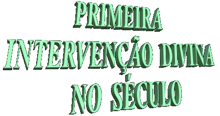
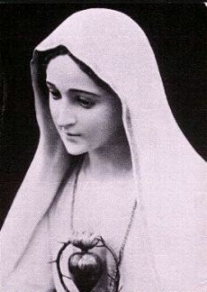
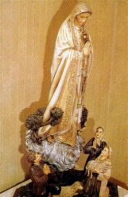
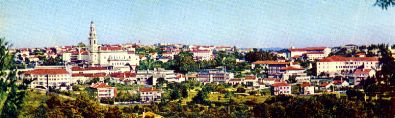
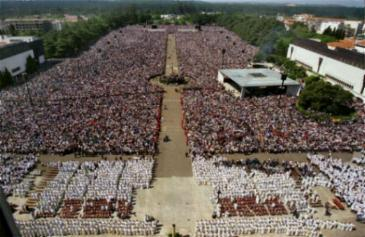
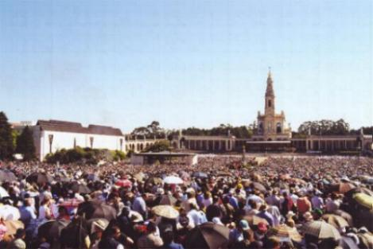

 A ambição desenfreada por riquezas
e poder, aliada a uma perigosa
A ambição desenfreada por riquezas
e poder, aliada a uma perigosa 
corrida armamentista
objetivando a supremacia comercial entre as nações, facilitaram a eclosão
da Primeira Grande Guerra Mundial, que começou em 1914 e terminou
em 1918.
De um lado, alinhou-se as Potências
Centrais, em especial a Alemanha, o Império austro-húngaro e a Turquia,
e do outro lado, os "Aliados"
, com a Inglaterra, França, Rússia, Itália e
posteriormente os Estados Unidos da América do Norte.
O conflito trouxe sérias consequências,
principalmente aos países da Europa, calculando-se que morreram mais
de oito milhões e meio de pessoas, ficando feridas e mutiladas aproximadamente
vinte milhões de soldados e civis.
Em 1917, resultante do agravamento de disputas internas
entre a Monarquia Czarista e o proletariado soviético dirigido por Wladimir Lênin,
desencadeou a Revolução Bolchevista na Rússia, culminando com a deposição
do Czar Nicolau II e seu assassinato, e de toda a sua família.
A rebelião armada implantou o Comunismo
ateu, inicialmente baseado 
nas idéias e teorias de Friedrich Engels
e Karl Marx, e posteriormente, assumiu uma diretriz revolucionária, comandada
por Lênin, que tanto mal causou ao mundo e ao próprio povo russo.
A revolução, foi
revestida de extrema crueldade e repleta de atos bárbaros, estimando-se que
nela morreram mais de duzentas mil pessoas.
Neste Tempo conturbado por
guerras e revoluções, que ocasionaram miséria, fome, sofrimento e morte de um
número incalculável de pessoas, foi que nossa MÃE SANTÍSSIMA decidiu intervir
pessoalmente para socorrer a humanidade, trazendo-nos lenitivo, consolo e
proteção, além de preciosos conselhos, prevenindo-nos contra as graves ameaças
que pairavam sobre o futuro. No período de 13 de Maio a 13 de Outubro de 1917,
Ela apareceu por seis vezes a três pequenos pastores: Lúcia (10 anos), Jacinta
(7 anos) e Francisco (9 anos), em Fátima, Portugal, confiando-lhes Mensagens
e três Segredos, que se relacionam com o bem-estar da humanidade.
Encerrando as Aparições no dia 13 de Outubro
de 1917, NOSSO SENHOR fez o extraordinário
“Milagre do Sol”, provando que a 
VIRGEM MARIA esteve entre nós.
O Milagre foi tão grandioso e tão admirável, que foi visto por todos que estavam
na Cova da Iria e por muitos residentes nos povoados e propriedades agrícolas
afastados a mais de 10 quilômetros do local da Aparição.
O fato teve repercussão
em Portugal e em diversas partes do mundo.Os jornais
noticiaram a ocorrência com sensacionalismo e ostentação! Com o passar dos
anos, Fátima tornou-se um local de peregrinação mundial! As pessoas vão lá para
visitar o local onde a VIRGEM MARIA apareceu, mas sobretudo vão para rezar, para
suplicar a preciosa e maternal ajuda de NOSSA SENHORA em benefício de parentes
e familiares, para cura de um mal, pela harmonia do lar, pelo êxito no trabalho
e muito mais. A verdade é que nossa MÃE SANTÍSSIMA, ofereceu a sua preciosa e
tão eficaz intercessão, prometendo ajudar a todos que quisessem cultivar
a justiça, a paz e o amor fraterno, providenciando para que sejam
felizes aqui na Terra e construam a sua morada definitiva na Eternidade.



Na explanada do Santuário em Fátima,
multidão de fiéis participam de uma Celebração no dia 13 de Maio em honra
e homenagem a NOSSA SENHORA.
Próxima
Página 

 Página Anterior
Página Anterior
Retorna ao Índice